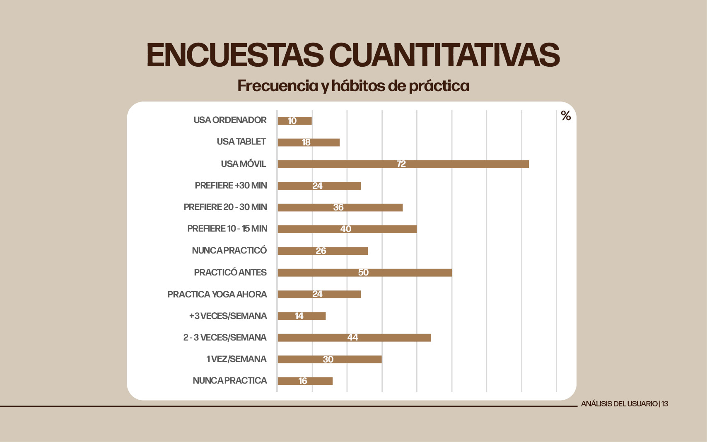
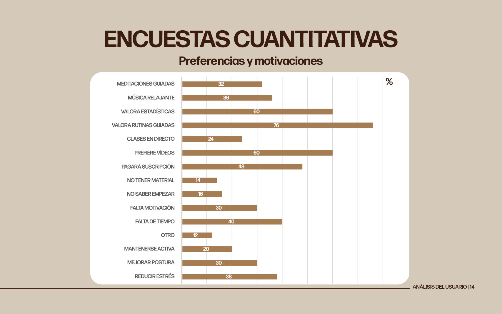
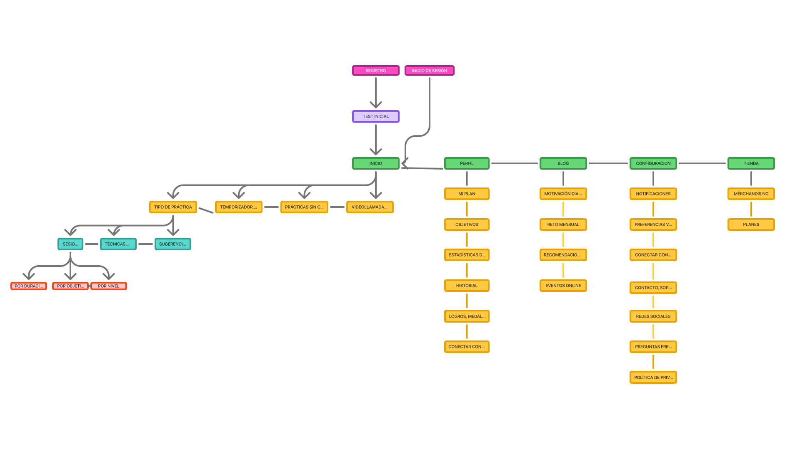
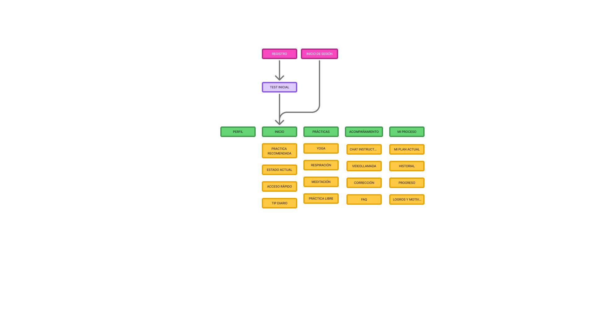
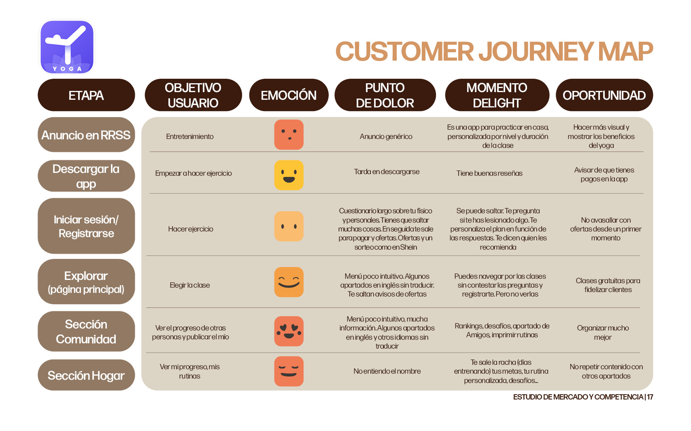
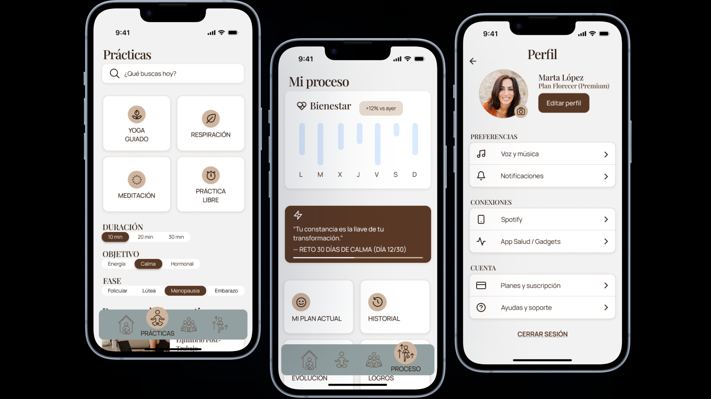

El problema
Las apps de yoga existentes no están diseñadas para la vida real de las mujeres. Asumen que tienes una hora libre, que tu cuerpo siempre está igual y que tu único obstáculo para practicar es la motivación.
Pero la realidad es otra: el tiempo es escaso, el cuerpo cambia por el ciclo menstrual, el embarazo, la perimenopausia o una lesión y ninguna app tiene en cuenta nada de eso. El resultado es una experiencia que no conecta con quien más lo necesita.
Pausana parte de una idea distinta: el yoga debería adaptarse a ti, no al revés. Clases personalizadas según el tiempo disponible, corrección de posturas en tiempo real con instructoras, y una práctica que tiene en cuenta tu momento vital no solo tu nivel técnico.
La usuaria
Mujeres de entre 30 y 50 años que trabajan, muchas con hijos, y que quieren practicar yoga pero no encajan en el molde de usuaria que las apps actuales tienen en mente.
Algunas nunca han practicado y quieren empezar sin sentirse perdidas. Otras practicaron antes y lo dejaron, y buscan retomarlo sin presión. En ambos casos, Pausana es un camino de aprendizaje progresivo, no una biblioteca de clases sin contexto.
La evidencia
Realicé encuestas cuantitativas para validar hipótesis sobre hábitos, preferencias y barreras. Los datos confirmaron lo que intuía y añadieron matices que cambiaron algunas decisiones de diseño.


Del card sorting a la arquitectura final
Realicé un card sorting con dos usuarias para definir la arquitectura de información de la app. El resultado fue revelador: las participantes organizaron el contenido en una estructura con 6 secciones principales y múltiples subniveles, técnicamente correcta, pero demasiado compleja.
El primer mapa de navegación lo construí a partir de ese card sorting. Tenía de todo: blog, tienda, configuración, comunidad, historial... Cada función en su sitio, pero demasiadas cosas en demasiados sitios.
Ahí estaba el aprendizaje real: el card sorting no me dio la solución, me dio el problema. Si las usuarias con tiempo para hacer el ejercicio ya se perdían entre tantas opciones, una mujer con diez minutos libres no llegaría ni a encontrar la clase.


El contexto actual
Analicé las dos apps de yoga más usadas en España, Down Dog y Daily Yoga, a través de customer journey maps para entender dónde falla la experiencia para nuestra usuaria.


La oportunidad
No existe ninguna app de yoga que corrija posturas en tiempo real ni que adapte la práctica a la mujer como sujeto específico, no como usuaria genérica a la que se añade un filtro de "embarazo".
Pausana ocupa ese hueco: una herramienta diseñada desde el principio para el cuerpo y la vida de las mujeres. Clases adaptadas al tiempo real disponible, corrección de posturas con instructoras vía videollamada o chat, y una práctica que evoluciona con la usuaria ya sea que esté empezando, retomando o atravesando un momento físico concreto.
La oportunidad de negocio es clara: hay demanda validada, disposición de pago demostrada, y un segmento de mercado que las apps actuales están ignorando sistemáticamente.

Lo que aprendí
Este proyecto me enseñó que diseñar "para todos" a menudo significa diseñar para nadie. Las apps existentes intentan ser universales y en ese intento pierden a las usuarias que más se beneficiarían de una herramienta así.
Lo que cambiaría: habría realizado entrevistas cualitativas además de las encuestas cuantitativas. Los datos me dijeron el qué: la falta de tiempo, la preferencia por sesiones cortas — pero las conversaciones me habrían dicho mejor el por qué y el cómo se siente.